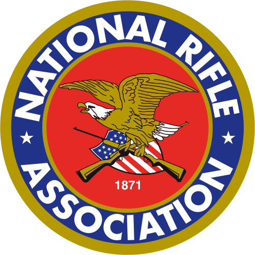
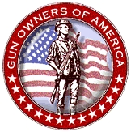

The Well Regulated Militia of the United States of America
The United States of America has a well regulated militia, guaranteed by the second amendment to the Constitution.
The United States does not need more regulation of guns. It does not need regulation requiring a mental health assessment of a gun purchaser. It has a Well Regulated Militia. Learn more about Elliot Rodger and other members of the Well Regulated Militia of the United States of America.
Learn more from these organizations about how you can help preserve the current system of the United States of America.
